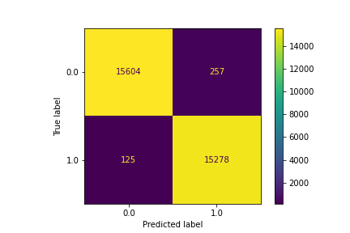
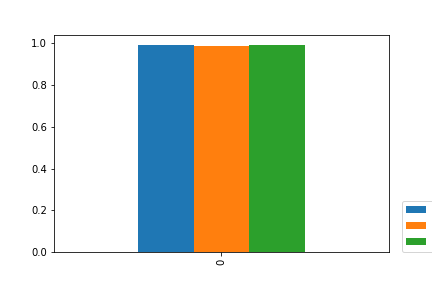

Model Card - IDOOU AI Budget Predicter
Model Details
-- Budget Predicter AI is a model that predicts user budget categoty based on input variables.
-- Utilizes supervised machine learning based on Logisitc Regression Classifier.
-- Developed by Kareem Wahid and Udacity Team.
Intended Use
-- Ultimatley intended as adjunt to provide personalized activity recommendations to users based on their profile.
-- Target population is Mobile app users who want to discover new activities in their area.
-- The model will be integrated into the IDOOU mobile app to generate real-time recommendations.
-- User feedback for accurate predictions will be prompted.
Factors
-- Budget
-- Age
-- Education Level
-- Gender
Metrics
-- Evaluation metrics include accuracy, and metrics based on 4 cardinalities (e.g., sensitivity, specificity, false positive rate, false negative rate)
-- Fairness metrics include statistical parity difference, disparate impact, and Theil index.
Training Data
-- 50% of full dataset split randomly shuffeled
Evaluation Data
-- 30% validation, 20% testing
Quantitative Analysis
--
--Before...
Best balanced accuracy: 0.9917
Corresponding statistical parity difference value: -0.5927
--After...
Best balanced accuracy: 0.9903
Corresponding statistical parity difference value: 0.0234
Results of the AI model after applying the bias mitigation strategy



Ethical Considerations
-- Users can control aspects of model and inspect features through feature permutation.
-- Data only representative of specific population, may not be applicable to end user population.
-- Very slight bias against individuals higher than HS degree.
Caveats and Recommendations
-- The model may not be able to account for all factors that contribute to a user's budget, such as their location or income.
-- Reccomended to use a diverse dataset that reflects the app's user base. Use techniques such as data augmentation to increase the diversity of the data. Regularly monitor and evaluate the model's performance to ensure that it remains unbiased.
-- User opt out option.
-- Further ethical AI analyses I would apply beyond this project:
-- Additional informative demographic features that can be integrated into model to mitigate bias.
Business Consequences
-- Positive Impact:
-- A fair and accurate budget predictor can help IDOOU's users make informed decisions about the activities they can afford to participate in. This can increase user engagement and satisfaction with the app, leading to increased usage and revenue.
-- Negative Impact:
-- If the model is biased or inaccurate, it can lead to negative user experiences and potentially damage the app's reputation. Additionally, biased predictions can perpetuate social inequalities and harm certain groups of users. This can lead to legal and ethical consequences for the company.